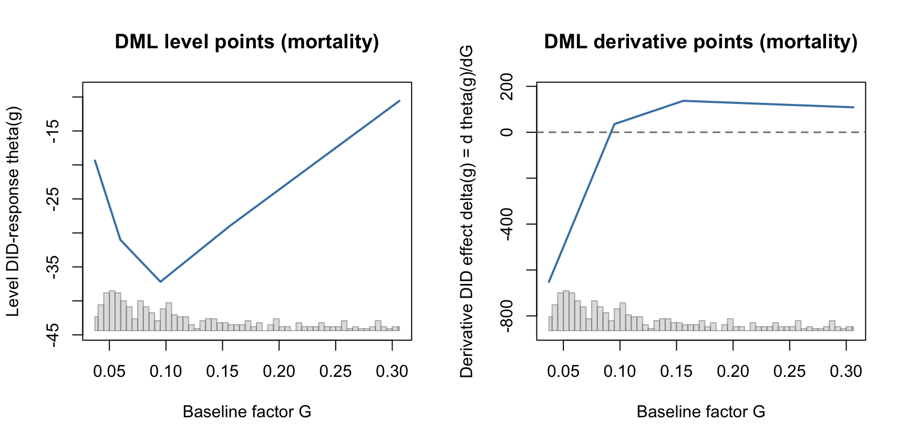
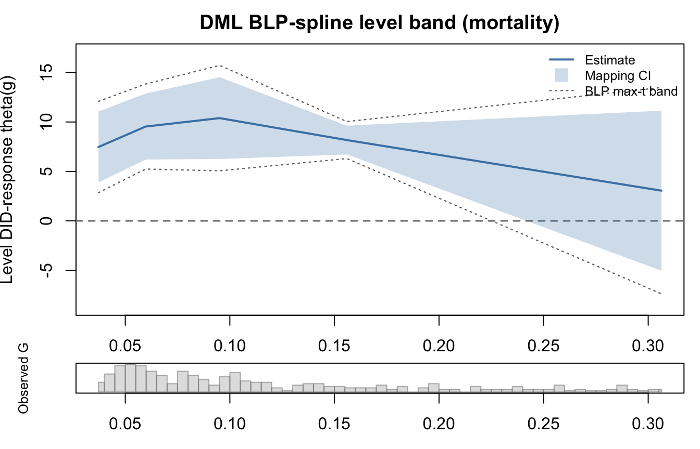

This chapter gives a focused workflow for the double/debiased machine learning (DML) estimators in fdid. It follows the teaching structure used in the interflex DML tutorial and Liu, Liu, and Xu (2025): first map the target, then explain nuisance learning and orthogonal signals, then separate scalar, curve, and incremental estimands.
The most important rule is that the DML methods are not interchangeable labels for one object. They target different quantities.
5.1 Target Map
dml_targets<-data.frame( method =c("dml_plr", "dml_flex", "dml_incremental"), target =c("Partially linear scalar slope","Flexible level curve theta(g) and derivative theta'(g)","Observed-population average derivative E[partial_g mu(G, X)]"), main_output =c("summary table","curve plots and reporting helpers","summary table"), main_caveat =c("Scalar PLR target only","Derivative and curve bands are more fragile than levels","Depends on the conditional-density score"))knitr::kable(dml_targets)
method
target
main_output
main_caveat
dml_plr
Partially linear scalar slope
summary table
Scalar PLR target only
dml_flex
Flexible level curve theta(g) and derivative theta’(g)
curve plots and reporting helpers
Derivative and curve bands are more fragile than levels
dml_incremental
Observed-population average derivative E[partial_g mu(G, X)]
summary table
Depends on the conditional-density score
All DML estimators work with the FDID first-difference outcome. Conceptually, the event-period target is built from
Aggregate or map the signal to the target scale: a scalar slope, a smooth curve in G, or an observed-population average derivative.
Binary method = "dml_binary" is covered in Chapter Chapter 2 because it targets a binary contrast, not a continuous-G scalar or curve.
The package default is learner = "linear" because it is fast and has few backend requirements. The rendered examples in this chapter use learner = "grf" throughout to show the flexible DML workflow: generalized random forests fit the nuisance functions inside the cross-fitting loop, while the target is still estimated through the method-specific orthogonal score. Because these examples fit multiple forests across folds and targets, this chapter takes noticeably longer to render than the earlier linear-learner version. That is expected and reflects the heavier GRF workflow.
As in Chapter Chapter 4, eval_g is an estimation grid for dml_flex. The scalar DML methods ignore it because they do not estimate a curve.
5.3 Scalar PLR Benchmark
method = "dml_plr" estimates a partially linear scalar slope. It is a useful benchmark when the question is whether the first-difference outcome has one average adjusted relationship with continuous G.
fit_plr_score<-fit_fdid(s_cont, tr_period =tr_period, ref_period =ref_period, method ="dml_plr", learner ="grf", K =3, S =1, dml_inference ="score")fit_plr_multiplier<-fit_fdid(s_cont, tr_period =tr_period, ref_period =ref_period, method ="dml_plr", learner ="grf", K =3, S =1, dml_inference ="score_multiplier", dml_boot =99)plr_table<-rbind(event_row(fit_plr_score, "PLR score", "partially linear slope", learner ="grf"),event_row(fit_plr_multiplier, "PLR score multiplier","partially linear slope", learner ="grf"))knitr::kable(plr_table[, c("fit", "target", "learner", "Estimate","Std.Error", "CI_Lower", "CI_Upper", "note")], digits =3)
fit
target
learner
Estimate
Std.Error
CI_Lower
CI_Upper
note
PLR score
partially linear slope
grf
-7.946
1.124
-10.149
-5.744
PLR score multiplier
partially linear slope
grf
-8.119
1.121
-10.339
-5.900
The default scalar DML interval is analytical score inference. The score_multiplier option changes the critical value using a scalar multiplier process based on stored score contributions. It is not a nonparametric refit bootstrap.
method = "dml_flex" targets the flexible level curve
\[
\theta(g) = E_X[\mu(g, X)]
\]
and its derivative with respect to G. The implementation cross-fits nuisance models, builds orthogonal pseudo-outcomes, and maps those pseudo-outcomes back to the eval_g grid using signal_map.
Two option families are easy to confuse:
density_method estimates the conditional density \(f_{G \mid X}(g \mid x)\) needed by the orthogonal continuous-treatment score. It is used by dml_flex and dml_incremental.
signal_map maps the cross-fitted dml_flex signal back to the eval_g grid. It is used by dml_flex only.
signal_map = "blp_spline" is therefore not a fourth density algorithm. It is a B-spline best linear projection mapping path that also stores finite-grid covariance matrices for level and derivative curves.
5.4.1 Conditional-density options
The package currently exposes three conditional-density approximations.
density_method
Algorithm
Practical reading
"residual_kde"
Fit \(E[G \mid X]\), compute residuals, and apply a univariate KDE to \(G - \hat m(X)\)
fast default; works best when G | X is close to a location-shift model
"location_scale"
Fit \(E[G \mid X]\), fit a residual-scale model, standardize residuals, and KDE the standardized residual
allows heteroskedastic G | X; often preferable in heteroskedastic designs
"local_kde"
Product Gaussian kernel over scaled covariates and a Gaussian KDE over G
most nonparametric of the three; sensitive to covariate dimension
The density estimate enters the DML score, not just a plot. For this reason, density_method should be treated as a sensitivity dimension, especially for dml_incremental, where the target is an observed-population average derivative and the conditional-density score is central.
In the mortality application, the GRF-based curve intervals are wide enough to obscure the fitted shape, especially for the derivative. The panels below therefore suppress intervals and should be read as point-estimate diagnostics for comparison with the kernel curves and scalar DML targets. A synthetic example later in this chapter shows the DML curve interval display more cleanly.
if(!is_fit_error(fit_flex_spline)){old_par<-par(mfrow =c(1, 2))plot(fit_flex_spline, type ="curve", curve ="level", interval ="none", ci =FALSE, Xdistr ="histogram", support.panel ="embedded", main ="DML level points (mortality)")plot(fit_flex_spline, type ="curve", curve ="derivative", interval ="none", ci =FALSE, Xdistr ="histogram", support.panel ="embedded", main ="DML derivative points (mortality)")par(old_par)}

The scalar event row for dml_flex is a compatibility summary. The curve fields are the primary output.
The DML curve inference labels are deliberately method-specific.
Pointwise intervals for dml_flex are second-stage mapping intervals.
With signal_map = "spline", the simultaneous band is a practical residual multiplier band over cross-fitted signal-mapping residuals.
With signal_map = "blp_spline", the object stores spline-basis covariance matrices and uses a Gaussian max-\(t\) critical value for finite-grid bands when the covariance is usable.
Neither path is a full nonparametric DML refit bootstrap over all nuisance stages.
if(!is_fit_error(fit_flex_blp)){inference_rows<-data.frame( field =c("signal_map", "density_method", "band_method","theta_vcov_available", "delta_vcov_available","gaussian_crit_theta", "simultaneous_crit_theta"), value =c(fit_flex_blp$signal_map,fit_flex_blp$density_method,fit_flex_blp$curve_event$simultaneous_band_method,!is.null(fit_flex_blp$curve_event$theta_vcov),!is.null(fit_flex_blp$curve_event$delta_vcov),round(fit_flex_blp$curve_event$gaussian_crit_theta, 3),round(fit_flex_blp$curve_event$simultaneous_crit_theta, 3)))knitr::kable(inference_rows)}
field
value
signal_map
blp_spline
density_method
location_scale
band_method
gaussian_max_t_blp_spline_covariance
theta_vcov_available
TRUE
delta_vcov_available
TRUE
gaussian_crit_theta
2.526
simultaneous_crit_theta
2.526
if(!is_fit_error(fit_flex_blp)){plot(fit_flex_blp, type ="curve", curve ="level", interval ="both", Xdistr ="histogram", support.panel ="separate", main ="DML BLP-spline level band (mortality)")}

5.6 Synthetic DML CI Illustration
The mortality example is the applied running example, but its derivative bands are hard to read. The small synthetic example below is only for teaching the CI display: the data-generating process has a smooth continuous-treatment effect, so the pointwise intervals and finite-grid band are easier to inspect.
n_dml_sim<-90time_dml_sim<-1:4G_dml_sim<-runif(n_dml_sim)X1_dml_sim<-rnorm(n_dml_sim)X2_dml_sim<-rnorm(n_dml_sim)dml_sim_panel<-data.frame( id =rep(seq_len(n_dml_sim), each =length(time_dml_sim)), time =rep(time_dml_sim, times =n_dml_sim), G =rep(G_dml_sim, each =length(time_dml_sim)), x1 =rep(X1_dml_sim, each =length(time_dml_sim)), x2 =rep(X2_dml_sim, each =length(time_dml_sim)))dml_tau<-function(g)0.6*g+0.8*g^2dml_tau_deriv<-function(g)0.6+1.6*gdml_sim_panel$Y<-with(dml_sim_panel,0.4*x1-0.3*x2+0.05*time+ifelse(time>=3, (time-2)*dml_tau(G), 0)+rnorm(nrow(dml_sim_panel), sd =0.20))s_dml_sim<-fdid_prepare( data =dml_sim_panel, Y_label ="Y", X_labels =c("x1", "x2"), G_label ="G", unit_label ="id", time_label ="time")eval_g_dml_sim<-seq(0.2, 0.8, length.out =7)
if(!is_fit_error(fit_flex_sim)){true_level<-1.5*dml_tau(eval_g_dml_sim)true_deriv<-1.5*dml_tau_deriv(eval_g_dml_sim)old_par<-par(mfrow =c(1, 2))plot(fit_flex_sim, type ="curve", curve ="level", interval ="both", Xdistr ="histogram", support.panel ="embedded", main ="Synthetic DML level CI")lines(eval_g_dml_sim, true_level, col ="firebrick", lty =2, lwd =2)plot(fit_flex_sim, type ="curve", curve ="derivative", interval ="both", Xdistr ="histogram", support.panel ="embedded", main ="Synthetic DML derivative CI")lines(eval_g_dml_sim, true_deriv, col ="firebrick", lty =2, lwd =2)par(old_par)}
5.7 Reporting Curve Quantities
Use the reporting helpers when the estimand is a specific level contrast or derivative value. For BLP-spline curves, fdid_contrast() can use the stored curve covariance matrix, so exact-grid contrasts reduce to the familiar V22 + V11 - 2 * V12 identity.
method = "dml_incremental" is not the average of the dml_flex derivative curve. It targets the observed-population average derivative directly, using an orthogonal score that includes the conditional density score for G | X. Therefore density_method is a substantive sensitivity choice.
fit_inc_residual<-fit_fdid(s_cont, tr_period =tr_period, ref_period =ref_period, method ="dml_incremental", learner ="grf", K =3, S =1, density_method ="residual_kde")fit_inc_location<-fit_fdid(s_cont, tr_period =tr_period, ref_period =ref_period, method ="dml_incremental", learner ="grf", K =3, S =1, density_method ="location_scale")fit_inc_local<-fit_fdid(s_cont, tr_period =tr_period, ref_period =ref_period, method ="dml_incremental", learner ="grf", K =3, S =1, density_method ="local_kde")incremental_table<-rbind(event_row(fit_inc_residual, "incremental residual KDE","observed average derivative", learner ="grf", density_method ="residual_kde"),event_row(fit_inc_location, "incremental location-scale","observed average derivative", learner ="grf", density_method ="location_scale"),event_row(fit_inc_local, "incremental local KDE","observed average derivative", learner ="grf", density_method ="local_kde"))knitr::kable(incremental_table[, c("fit", "density_method", "Estimate","Std.Error", "CI_Lower", "CI_Upper","note")], digits =3)
fit
density_method
Estimate
Std.Error
CI_Lower
CI_Upper
note
incremental residual KDE
residual_kde
-267.698
35.194
-336.678
-198.719
incremental location-scale
location_scale
-401.336
42.957
-485.530
-317.142
incremental local KDE
local_kde
-367.512
172.895
-706.379
-28.644
5.8.1 Learner Choice
The DML estimators support several nuisance learners. Optional learner packages are loaded only when requested, so a tutorial should check availability before running a large grid.
High-dimensional expansions are another sensitivity dimension. The example below creates a polynomial and interaction basis without running the full learner grid.
For a full analysis, vary one dimension at a time: learner, expanded design, density_method, then signal_map. The rendered tutorial keeps the grid small; set FDID_TUTORIAL_HEAVY=true before rendering if you want larger replication counts or optional learner grids.
5.9 DML Checklist
Before reporting a DML result, check:
whether the target is scalar, curve, or incremental;
whether G is truly continuous or binary;
which nuisance learner was used and whether optional packages were loaded;
which conditional-density method was used for dml_flex or dml_incremental;
whether the interval is analytical score, scalar score multiplier, practical signal-residual multiplier, or BLP-spline Gaussian max-\(t\);
whether curve conclusions rely on sparse support or a fragile derivative.
Cao, Jiarui, Yiqing Xu, and Chuanchuan Zhang. 2022. “Clans and Calamity: How Social Capital Saved Lives During China’s Great Famine.”Journal of Development Economics 157: 102865.
Cinelli, Carlos, and Chad Hazlett. 2020. “Making Sense of Sensitivity: Extending Omitted Variable Bias.”Journal of the Royal Statistical Society: Series B 82 (1): 39–67.
Liu, Jiehan, Ziyi Liu, and Yiqing Xu. 2025. “A Practical Guide to Estimating Conditional Marginal Effects: Modern Approaches.”arXiv Preprint arXiv:2504.01355.
Xu, Yiqing, Anqi Zhao, and Peng Ding. 2026. “Factorial Difference-in-Differences.”Journal of the American Statistical Association, no. just-accepted: 1–23.
Source Code
# DML Estimators for Continuous G {#sec-dml-continuous}```{r dml-setup, include=FALSE}knitr::opts_chunk$set(echo =TRUE,cache =FALSE,message =FALSE,warning =FALSE,fig.width =7,fig.height =4.8)set.seed(20260531)fit_fdid <-function(...) {tryCatch(fdid(...),error =function(e) {structure(list(message =conditionMessage(e)), class ="fdid_fit_error") } )}is_fit_error <-function(x) inherits(x, "fdid_fit_error")event_row <-function(obj, label, target, learner =NA_character_,density_method =NA_character_,signal_map =NA_character_) {if (is_fit_error(obj)) {return(data.frame(fit = label, target = target, learner = learner,density_method = density_method, signal_map = signal_map,Estimate =NA_real_, Std.Error =NA_real_,CI_Lower =NA_real_, CI_Upper =NA_real_,note = obj$message,check.names =FALSE )) } ev <- obj$est$eventdata.frame(fit = label, target = target, learner = learner,density_method = density_method, signal_map = signal_map,Estimate =as.numeric(ev$Estimate[1]),Std.Error =as.numeric(ev$Std.Error[1]),CI_Lower =as.numeric(ev$CI_Lower[1]),CI_Upper =as.numeric(ev$CI_Upper[1]),note ="",check.names =FALSE )}metadata_table <-function(obj) {if (is_fit_error(obj) ||is.null(obj$dml_metadata)) return(data.frame()) vals <-vapply(obj$dml_metadata, function(z) {if (length(z) ==0L ||is.null(z)) return(NA_character_)paste(as.character(z), collapse =", ") }, character(1L))data.frame(field =names(vals), value =unname(vals), row.names =NULL)}```This chapter gives a focused workflow for the double/debiased machine learning(DML) estimators in `fdid`. It follows the teaching structure used in the`interflex` DML tutorial and @liu2025practical: first map the target, thenexplain nuisance learning and orthogonal signals, then separate scalar,curve, and incremental estimands.The most important rule is that the DML methods are not interchangeable labelsfor one object. They target different quantities.## Target Map```{r dml-target-map}dml_targets <-data.frame(method =c("dml_plr", "dml_flex", "dml_incremental"),target =c("Partially linear scalar slope","Flexible level curve theta(g) and derivative theta'(g)","Observed-population average derivative E[partial_g mu(G, X)]" ),main_output =c("summary table","curve plots and reporting helpers","summary table" ),main_caveat =c("Scalar PLR target only","Derivative and curve bands are more fragile than levels","Depends on the conditional-density score" ))knitr::kable(dml_targets)```All DML estimators work with the FDID first-difference outcome. Conceptually,the event-period target is built from$$\Delta Y_i = \bar Y_{i,\mathrm{event}} - Y_{i,\mathrm{ref}}.$$DML then proceeds in three steps:1. Learn nuisance functions using cross-fitting.2. Construct an orthogonal signal for the target.3. Aggregate or map the signal to the target scale: a scalar slope, a smooth curve in `G`, or an observed-population average derivative.Binary `method = "dml_binary"` is covered in Chapter @sec-binary because ittargets a binary contrast, not a continuous-`G` scalar or curve.The package default is `learner = "linear"` because it is fast and has fewbackend requirements. The rendered examples in this chapter use`learner = "grf"` throughout to show the flexible DML workflow: generalizedrandom forests fit the nuisance functions inside the cross-fitting loop, whilethe target is still estimated through the method-specific orthogonal score.Because these examples fit multiple forests across folds and targets, thischapter takes noticeably longer to render than the earlier linear-learnerversion. That is expected and reflects the heavier GRF workflow.## Data Setup```{r dml-library-data}library(fdid)data(fdid)mortality$uniqueid <-paste(as.character(mortality$provid),as.character(mortality$countyid),sep ="-")covar <-c("avggrain", "nograin", "urban", "dis_bj", "dis_pc","rice", "minority", "edu", "lnpop")tr_period <-1958:1961ref_period <-1957s_cont <-fdid_prepare(data =transform(mortality, G_cont = lnpczupu),Y_label ="mortality",X_labels = covar,G_label ="G_cont",unit_label ="uniqueid",time_label ="year")g_positive <- s_cont$G[s_cont$G >0]eval_g_dml <-as.numeric(stats::quantile( g_positive,probs =c(0.20, 0.35, 0.50, 0.65, 0.80),na.rm =TRUE))```As in Chapter @sec-kernel-continuous, `eval_g` is an estimation grid for`dml_flex`. The scalar DML methods ignore it because they do not estimate acurve.## Scalar PLR Benchmark`method = "dml_plr"` estimates a partially linear scalar slope. It is a usefulbenchmark when the question is whether the first-difference outcome has oneaverage adjusted relationship with continuous `G`.```{r dml-plr-fit}fit_plr_score <-fit_fdid( s_cont,tr_period = tr_period,ref_period = ref_period,method ="dml_plr",learner ="grf",K =3,S =1,dml_inference ="score")fit_plr_multiplier <-fit_fdid( s_cont,tr_period = tr_period,ref_period = ref_period,method ="dml_plr",learner ="grf",K =3,S =1,dml_inference ="score_multiplier",dml_boot =99)plr_table <-rbind(event_row(fit_plr_score, "PLR score", "partially linear slope",learner ="grf"),event_row(fit_plr_multiplier, "PLR score multiplier","partially linear slope", learner ="grf"))knitr::kable(plr_table[, c("fit", "target", "learner", "Estimate","Std.Error", "CI_Lower", "CI_Upper", "note")],digits =3)```The default scalar DML interval is analytical score inference. The`score_multiplier` option changes the critical value using a scalar multiplierprocess based on stored score contributions. It is not a nonparametric refitbootstrap.```{r dml-plr-metadata}if (!is_fit_error(fit_plr_multiplier)) { knitr::kable(metadata_table(fit_plr_multiplier))}```## Flexible DML Curves`method = "dml_flex"` targets the flexible level curve$$\theta(g) = E_X[\mu(g, X)]$$and its derivative with respect to `G`. The implementation cross-fits nuisancemodels, builds orthogonal pseudo-outcomes, and maps those pseudo-outcomes backto the `eval_g` grid using `signal_map`.Two option families are easy to confuse:- `density_method` estimates the conditional density $f_{G \mid X}(g \mid x)$ needed by the orthogonal continuous-treatment score. It is used by`dml_flex` and `dml_incremental`.- `signal_map` maps the cross-fitted `dml_flex` signal back to the `eval_g` grid. It is used by `dml_flex` only.`signal_map = "blp_spline"` is therefore not a fourth density algorithm. It isa B-spline best linear projection mapping path that also stores finite-gridcovariance matrices for level and derivative curves.### Conditional-density optionsThe package currently exposes three conditional-density approximations.|`density_method`| Algorithm | Practical reading ||---|---|---||`"residual_kde"`| Fit $E[G \mid X]$, compute residuals, and apply a univariate KDE to $G - \hat m(X)$ | fast default; works best when `G | X` is close to a location-shift model ||`"location_scale"`| Fit $E[G \mid X]$, fit a residual-scale model, standardize residuals, and KDE the standardized residual | allows heteroskedastic `G | X`; often preferable in heteroskedastic designs ||`"local_kde"`| Product Gaussian kernel over scaled covariates and a Gaussian KDE over `G`| most nonparametric of the three; sensitive to covariate dimension |The density estimate enters the DML score, not just a plot. For this reason,`density_method` should be treated as a sensitivity dimension, especially for`dml_incremental`, where the target is an observed-population averagederivative and the conditional-density score is central.```{r dml-flex-fit}dml_curve_draws <-if (identical(tolower(Sys.getenv("FDID_TUTORIAL_HEAVY")),"true")) 199L else49Lfit_flex_spline <-fit_fdid( s_cont,tr_period = tr_period,ref_period = ref_period,method ="dml_flex",learner ="grf",K =3,S =1,eval_g = eval_g_dml,signal_map ="spline",density_method ="residual_kde",boot = dml_curve_draws)fit_flex_blp <-fit_fdid( s_cont,tr_period = tr_period,ref_period = ref_period,method ="dml_flex",learner ="grf",K =3,S =1,eval_g = eval_g_dml,signal_map ="blp_spline",density_method ="location_scale",boot = dml_curve_draws)flex_table <-rbind(event_row(fit_flex_spline, "dml_flex spline", "average level summary",learner ="grf", density_method ="residual_kde",signal_map ="spline"),event_row(fit_flex_blp, "dml_flex BLP spline", "average level summary",learner ="grf", density_method ="location_scale",signal_map ="blp_spline"))knitr::kable(flex_table[, c("fit", "signal_map", "density_method","Estimate", "Std.Error", "CI_Lower", "CI_Upper","note")],digits =3)```In the mortality application, the GRF-based curve intervals are wide enough toobscure the fitted shape, especially for the derivative. The panels belowtherefore suppress intervals and should be read as point-estimate diagnosticsfor comparison with the kernel curves and scalar DML targets. A syntheticexample later in this chapter shows the DML curve interval display morecleanly.```{r dml-flex-plots, fig.width=9, fig.height=4.4}if (!is_fit_error(fit_flex_spline)) { old_par <-par(mfrow =c(1, 2))plot(fit_flex_spline, type ="curve", curve ="level",interval ="none", ci =FALSE, Xdistr ="histogram",support.panel ="embedded",main ="DML level points (mortality)")plot(fit_flex_spline, type ="curve", curve ="derivative",interval ="none", ci =FALSE, Xdistr ="histogram",support.panel ="embedded",main ="DML derivative points (mortality)")par(old_par)}```The scalar event row for `dml_flex` is a compatibility summary. The curve fieldsare the primary output.```{r dml-flex-curve-table}if (!is_fit_error(fit_flex_spline)) { flex_curve <-data.frame(G = fit_flex_spline$eval_g,theta_hat = fit_flex_spline$curve_event$theta_hat,se_theta = fit_flex_spline$curve_event$se_theta,delta_hat = fit_flex_spline$curve_event$delta_hat,se_delta = fit_flex_spline$curve_event$se_delta ) knitr::kable(flex_curve, digits =3)}```## DML Curve InferenceThe DML curve inference labels are deliberately method-specific.- Pointwise intervals for `dml_flex` are second-stage mapping intervals.- With `signal_map = "spline"`, the simultaneous band is a practical residual multiplier band over cross-fitted signal-mapping residuals.- With `signal_map = "blp_spline"`, the object stores spline-basis covariance matrices and uses a Gaussian max-$t$ critical value for finite-grid bands when the covariance is usable.- Neither path is a full nonparametric DML refit bootstrap over all nuisance stages.```{r dml-flex-inference-metadata}if (!is_fit_error(fit_flex_blp)) { inference_rows <-data.frame(field =c("signal_map", "density_method", "band_method","theta_vcov_available", "delta_vcov_available","gaussian_crit_theta", "simultaneous_crit_theta"),value =c( fit_flex_blp$signal_map, fit_flex_blp$density_method, fit_flex_blp$curve_event$simultaneous_band_method,!is.null(fit_flex_blp$curve_event$theta_vcov),!is.null(fit_flex_blp$curve_event$delta_vcov),round(fit_flex_blp$curve_event$gaussian_crit_theta, 3),round(fit_flex_blp$curve_event$simultaneous_crit_theta, 3) ) ) knitr::kable(inference_rows)}``````{r dml-blp-band-plot, fig.width=7, fig.height=4.5}if (!is_fit_error(fit_flex_blp)) {plot(fit_flex_blp, type ="curve", curve ="level",interval ="both", Xdistr ="histogram",support.panel ="separate",main ="DML BLP-spline level band (mortality)")}```## Synthetic DML CI IllustrationThe mortality example is the applied running example, but its derivative bandsare hard to read. The small synthetic example below is only for teaching theCI display: the data-generating process has a smooth continuous-treatmenteffect, so the pointwise intervals and finite-grid band are easier to inspect.```{r dml-synthetic-data}n_dml_sim <-90time_dml_sim <-1:4G_dml_sim <-runif(n_dml_sim)X1_dml_sim <-rnorm(n_dml_sim)X2_dml_sim <-rnorm(n_dml_sim)dml_sim_panel <-data.frame(id =rep(seq_len(n_dml_sim), each =length(time_dml_sim)),time =rep(time_dml_sim, times = n_dml_sim),G =rep(G_dml_sim, each =length(time_dml_sim)),x1 =rep(X1_dml_sim, each =length(time_dml_sim)),x2 =rep(X2_dml_sim, each =length(time_dml_sim)))dml_tau <-function(g) 0.6* g +0.8* g^2dml_tau_deriv <-function(g) 0.6+1.6* gdml_sim_panel$Y <-with( dml_sim_panel,0.4* x1 -0.3* x2 +0.05* time +ifelse(time >=3, (time -2) *dml_tau(G), 0) +rnorm(nrow(dml_sim_panel), sd =0.20))s_dml_sim <-fdid_prepare(data = dml_sim_panel,Y_label ="Y",X_labels =c("x1", "x2"),G_label ="G",unit_label ="id",time_label ="time")eval_g_dml_sim <-seq(0.2, 0.8, length.out =7)``````{r dml-synthetic-ci-fit}fit_flex_sim <-fit_fdid( s_dml_sim,tr_period =3:4,ref_period =2,method ="dml_flex",learner ="grf",K =3,S =1,eval_g = eval_g_dml_sim,signal_map ="blp_spline",density_method ="residual_kde",boot = dml_curve_draws)if (!is_fit_error(fit_flex_sim)) {data.frame(signal_map = fit_flex_sim$signal_map,density_method = fit_flex_sim$density_method,band_method = fit_flex_sim$curve_event$simultaneous_band_method )}``````{r dml-synthetic-ci-plots, fig.width=9, fig.height=4.4}if (!is_fit_error(fit_flex_sim)) { true_level <-1.5*dml_tau(eval_g_dml_sim) true_deriv <-1.5*dml_tau_deriv(eval_g_dml_sim) old_par <-par(mfrow =c(1, 2))plot(fit_flex_sim, type ="curve", curve ="level",interval ="both", Xdistr ="histogram",support.panel ="embedded",main ="Synthetic DML level CI")lines(eval_g_dml_sim, true_level, col ="firebrick", lty =2, lwd =2)plot(fit_flex_sim, type ="curve", curve ="derivative",interval ="both", Xdistr ="histogram",support.panel ="embedded",main ="Synthetic DML derivative CI")lines(eval_g_dml_sim, true_deriv, col ="firebrick", lty =2, lwd =2)par(old_par)}```## Reporting Curve QuantitiesUse the reporting helpers when the estimand is a specific level contrast orderivative value. For BLP-spline curves, `fdid_contrast()` can use the storedcurve covariance matrix, so exact-grid contrasts reduce to the familiar`V22 + V11 - 2 * V12` identity.```{r dml-reporting}if (!is_fit_error(fit_flex_blp)) { dml_report <-rbind(fdid_contrast(fit_flex_blp, g0 =min(eval_g_dml), g1 =max(eval_g_dml)),fdid_derivative(fit_flex_blp, g0 = stats::median(eval_g_dml)) ) knitr::kable( dml_report[, c("target", "method", "g0", "g1", "estimate","std.error", "conf.low", "conf.high", "inference")],digits =3 )}```## Incremental Average Derivative`method = "dml_incremental"` is not the average of the `dml_flex` derivativecurve. It targets the observed-population average derivative directly, using anorthogonal score that includes the conditional density score for `G | X`.Therefore `density_method` is a substantive sensitivity choice.```{r dml-incremental-fit}fit_inc_residual <-fit_fdid( s_cont,tr_period = tr_period,ref_period = ref_period,method ="dml_incremental",learner ="grf",K =3,S =1,density_method ="residual_kde")fit_inc_location <-fit_fdid( s_cont,tr_period = tr_period,ref_period = ref_period,method ="dml_incremental",learner ="grf",K =3,S =1,density_method ="location_scale")fit_inc_local <-fit_fdid( s_cont,tr_period = tr_period,ref_period = ref_period,method ="dml_incremental",learner ="grf",K =3,S =1,density_method ="local_kde")incremental_table <-rbind(event_row(fit_inc_residual, "incremental residual KDE","observed average derivative", learner ="grf",density_method ="residual_kde"),event_row(fit_inc_location, "incremental location-scale","observed average derivative", learner ="grf",density_method ="location_scale"),event_row(fit_inc_local, "incremental local KDE","observed average derivative", learner ="grf",density_method ="local_kde"))knitr::kable(incremental_table[, c("fit", "density_method", "Estimate","Std.Error", "CI_Lower", "CI_Upper","note")],digits =3)```### Learner ChoiceThe DML estimators support several nuisance learners. Optional learner packagesare loaded only when requested, so a tutorial should check availability beforerunning a large grid.```{r dml-learner-availability}learner_package <-c(linear =NA_character_,gam ="mgcv",lasso ="glmnet",ridge ="glmnet",elasticnet ="glmnet",ranger ="ranger",grf ="grf",nnet ="nnet",xgboost ="xgboost")learner_available <-function(learner) { pkg <- learner_package[[learner]]is.na(pkg) ||requireNamespace(pkg, quietly =TRUE)}learner_table <-data.frame(learner =names(learner_package),package =unname(learner_package),available =vapply(names(learner_package), learner_available, logical(1)),stringsAsFactors =FALSE)knitr::kable(learner_table)```### High-Dimensional ExpansionsHigh-dimensional expansions are another sensitivity dimension. The examplebelow creates a polynomial and interaction basis without running the fulllearner grid.```{r dml-hd-design}s_cont_hd <-fdid_expand_covariates( s_cont,basis_type ="polynomial",poly_degree =2,include_interactions =TRUE)hd_table <-data.frame(design =c("raw covariates", "polynomial plus interactions"),covariate_columns =c(length(grep("^x[0-9]+$", names(s_cont))),length(grep("^x[0-9]+$", names(s_cont_hd))) ))knitr::kable(hd_table)```For a full analysis, vary one dimension at a time: learner, expanded design,`density_method`, then `signal_map`. The rendered tutorial keeps the gridsmall; set `FDID_TUTORIAL_HEAVY=true` before rendering if you want largerreplication counts or optional learner grids.## DML ChecklistBefore reporting a DML result, check:- whether the target is scalar, curve, or incremental;- whether `G` is truly continuous or binary;- which nuisance learner was used and whether optional packages were loaded;- which conditional-density method was used for `dml_flex` or`dml_incremental`;- whether the interval is analytical score, scalar score multiplier, practical signal-residual multiplier, or BLP-spline Gaussian max-$t$;- whether curve conclusions rely on sparse support or a fragile derivative.